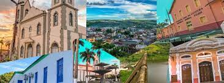

Primórdios da História Palmarense
A região foi habitada primitivamente pelos índios potiguares e caetés. De 1848 a 1873 Palmares foi denominado de Povoado dos Montes, porque as terras originalmente pertenciam à família Montes, que as recebera por sesmaria para explorar a atividade açucareira, vindo a construir uma capela, que anos mais tarde daria origem à catedral de Nossa Senhora da Conceição, padroeira local. Logo em seguida, dita propriedade passou a ser conhecida por Trombeta, devido à lenda de que um soldado teria perdido a corneta durante a passagem da tropa a cavalo pela localidade. Anos depois recebeu a denominação de Povoado do Una, em homenagem ao rio que banha a localidade e, finalmente Município dos Palmares, triunfando assim a denominação dos negros, por força da abundância de palmeiras que vicejavam na região, a exemplo do babaçu, carnaúba, pindoba, ouricuri e dendê. Em 13 de maio de 1862 foi criada a Comarca dos Palmares por força da Lei Provincial nº 1030. Em 1868 foi Palmares elevado à categoria de Distrito por força da Lei Provincial nº 844, de 28 de setembro.

Em 1873, por força da Lei Provincial n° 1083, de 24 de maio, foi criado o Município autônomo que tomou o nome de Município dos Palmares. Finalmente, em 9 de junho de 1879, Palmares emancipou-se do Município da Água Preta, por força da Lei Provincial n° 1458, adquirindo portanto foros de cidade autônoma. Palmares tem muita história para contar. Além de grandes intelectuais, o município possui o Theatro Apollo, o primeiro teatro que começou a funcionar no interior e o terceiro mais antigo do Estado, além de abrigar a primeira Maçonaria de Pernambuco, Loja Maçônica Fraternidade Palmarense nº 01, da qual saíram obreiros para fundar no Recife a Grande Loja de Pernambuco.
Localização da Cidade
Localiza-se a uma latitude 08º41'00" sul e a uma longitude 35º35'30" oeste, estando a uma altitude de 125 metros. Sua população, conforme estimativas do IBGE de 2021, era de 63 745 habitantes.
A sede do município dista 122 km de Recife, a capital do Estado; 105 km de Garanhuns e 123 km de Maceió, a capital do vizinho Estado de Alagoas. Situa-se a 125 metros acima do nível do mar.
Limita-se ao norte com o Município do Bonito, a nordeste e leste com Joaquim Nabuco, ao sul com Xexéu, a sudeste com Água Preta e a oeste com Catende.